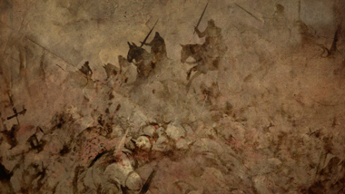

Thank you for helping. Every log shows how units really fight, not just how they look on paper.
Your log is cbp_battle_log.txt in your Total War: WARHAMMER III game folder (in Steam: right-click the game, Manage, Browse local files). The optional Battle Logger mod writes it.
Your Battles
Opens a GitHub test report with your log already filled in. Pick the battle type and unit size, add anything you noticed, and press Submit. You need a free GitHub account.
No GitHub account? This copies a short text summary of your battles. Paste it into a discussion on the mod's Steam Workshop page.